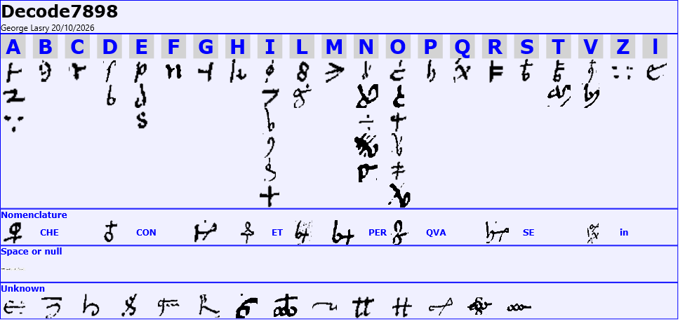
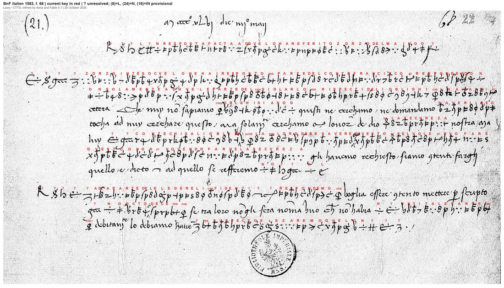
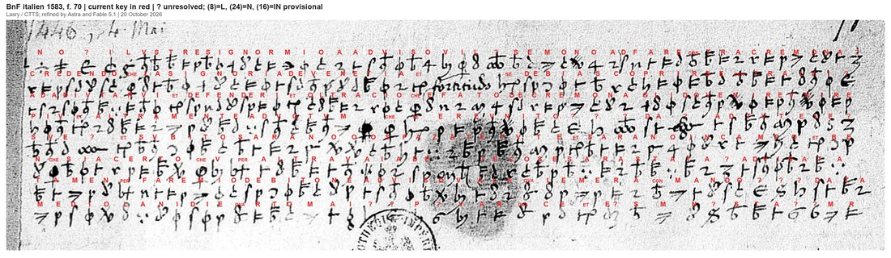

At a glanceKey recovered from the ciphertext alone, partial · 721 of 827 cipher signs give sense
- The letters
- Two slips dated 4 May 1446. f. 68: a reply to what Zorzo (Giorgio) del Maino reported, writer and place unknown. f. 70: catalogued as Vincenzo Amidani to Francesco Sforza, from Milan.
- Where
- Bibliothèque nationale de France, italien 1583 ff. 68 and 70 (Archivio Sforzesco). f. 68 is DECODE R7898, without metadata; f. 70 is photographed at the top right of image P1 of R7899, which is catalogued under f. 75.
- The cipher
- One key for both: homophonic letters (up to six signs for i and o) and signs for the words or syllables che, con, et, per, qva and se. No word division. f. 68 mixes cipher runs with clear Lombard Italian.
- How the key was found
- George Lasry transcribed both slips with CTTS (CrypTool Transcriber and Solver), which generated the initial key from the ciphertext; Astra and Fable 5.1 improved the key and reading. No outside key or plaintext was used.
- What it says
- f. 68 answers Maino about Count Francesco’s obligations to others and the writer’s “secvreza”, and asks for eight or ten names from which trusted persons can be chosen. f. 70 reports a move against Cremona and what Venice might do.
- Still open
- 47 sign occurrences in 14 sign classes, mostly at line openings; three provisional values; the signature block of f. 70; a few clear words over damaged strokes.
- Credit
- Contributed by George Lasry (pull request 60). The project’s own attempt of 21 September 2026 failed; it is kept below.
01 The two slips
The Paris volumes italien 1583–1593 belong to the Archivio Sforzesco, bought by the Bibliothèque impériale in 1867. Giuseppe Mazzatinti’s inventory (Archivio storico lombardo X, 1883, p. 230) lists both slips under 1446: “f. 68. Risposta a quanto ha riferito Zorzo Maino (4 maggio). In cifre” and “f. 70. Lettera di Vincenzo Amidani a Fr. Sforza (Milano 4 maggio). In cifre.” That spring Sforza was under pressure in the Marche while Venice attacked the lands of Filippo Maria Visconti, duke of Milan; Sforza became duke himself in 1450.
f. 68 carries its date in clear at the head, “M°cccc°xlvj die iiij° may”, and alternates cipher runs with clear Italian. f. 70 is all cipher, in another hand, and ends with a deciphered date line, “mediolani die qvarto mai” (Milan, 4 May), which agrees with Mazzatinti. The year and the Amidani attribution come from the archive; the signature after the date has not been deciphered. Neither slip has a known contemporary decipherment, and no edition was found.

02 The key
The same key serves both slips. Each letter has one to six signs (i and o six each, n five); six signs stand for whole words or syllables: che, con, et (two signs), per (two), qva and se. Three values are provisional: (8) = l, (24) = n and (16) = in. Fourteen sign classes have no value. The key sheet below was drawn by Lasry in CTTS from the signs of both slips.

The key is not one of the Sforza keys on DECODE. In September all 208 key records of the Archivio di Stato di Milano, Carteggio Sforzesco cart. 1591, 1597 and 1598, were checked. Cart. 1597 no. 14, an eighteenth-century copy of “Angelus cum cifra Vincentij”, belongs to the same family (homophones, syllable and word signs, nulls), but its letter signs differ; no. 17, of 1447, differs too.
03 f. 68: the reply concerning Zorzo del Maino
The text below is Lasry’s edition. Bold is enciphered in the original; roman is clear writing or a bracketed supply; ? marks a sign without a value. The writer speaks as “nuy” and of the count in the third person, so the writer is not identified; Amidani’s name and Milan should not be carried over from f. 70.
? ? ? l ? n resposta facta ad qvelo ha referito zorzo del maino o ?
? ? ? ? zorzo inteso cvelo ne hai resposto per parte del conte francisco et respondendo n-
on solamente ad qvele parte del consiglarlo per rispecti de li oblighi che lha con alt[r]i et
etcetera. Che nuy no sapiamo che obl[i]ghi siano n quisti ne cerchamo ne domandamo saverli ne o
tocha ad nuy cerchare questo, ma solum[ente] cerchamo con l’onor de dio et la secvreza nostra [aya? …]
luy ? ? conte chi sa li oblighi che la con loro debe savere in qvesto et se lvole et pvo fare
qvesto o non et volendo farne la secvreza gli havemo rechiesto siano contenti farghi
quello e dicto, et ad quello se refferemo n o ? ? n l
? ? ? ? ? ad la parte del elegere li confidenti ? ? respondemo che voglia essere contento mettere per scripto
? n o octo dece per che se tra loro no gli sera noma uno che no habia n ?intita le parte per-
che dubitano lo debiamo hauere ? per svspecto elezaremo qvelo n ? ? ?
English translation (Lasry)
[…] Reply to what Zorzo del Maino has reported. […]
[…] Zorzo, having understood what you have answered us on behalf of Count Francesco, and replying not
only to those points about advising him in view of the obligations he has towards others, and
so forth. We do not know what obligations […] these are, nor do we seek or ask to know them, nor […]
does it fall to us to inquire into this; we seek only God’s honour and our security […].
He […] the count, who knows the obligations he has towards them, ought to know about this, and whether he wishes and is able to do
this or not; and if he wishes to give us that assurance, we have requested that they be willing to do for him
what has been stated, and to that we refer. […]
[…] As to the matter of choosing trusted persons, […] we reply that he should be willing to put in writing
[…] eight or ten [names], because, if among them there is only one who has not […] the parties, because
they fear we must regard him […] with suspicion, we shall choose that one. […]
The first cipher line restates the docket that Mazzatinti printed in 1883 (“Risposta a quanto ha riferito Zorzo Maino”). The contribution does not say that heading was used as a crib, so it is counted here as a check on the key, not its source. The clear and the cipher passages now join into one argument: the writer will not inquire into the count’s obligations to others, wants only security, and asks for a written list of eight or ten names, from which a single trusted person will be chosen.

04 f. 70: Milan, about Cremona and Venice
The letter is entirely in cipher. The date line deciphers as Milan, 4 May; the twenty-four signs after it, which should hold the signature, give letters that do not form a name.
credendo che la signoria de venetia et [fornendo?] se debia scoprirse contra lvi ?
ad adivtarvi et defender[v?]i et oltra cio che e fato de cremona gli do venire vnire
piv et altramente ad votvm che se e revnito ? ? ? da ? ad tvte le ?
sve ? et svbito sarano o o spazate tvte et sarano in campo et be-
nche sia certo che v per altra vaia de [ques?]te cose sara stata ? advisata
tamen per fare mio debito ne adviso v a la qvale me raconmando ? ? ? data
mediolani die qvarto mai ? ? p ? v a r qva c e et e ? s m n ? s t a ? ? m r
English translation (Lasry)
Believing that the government of Venice and [providing?] should declare itself against him […]
to assist you and defend [you?]; and besides what has been done concerning Cremona, […]
more, and otherwise as desired, [someone or something] has come together […] for all the […]
his […], and immediately they will all be [dispatched?] […], and they will be in the field; and although
I am certain that you will have been […] informed by another [route?] about [these?] matters,
nevertheless, to fulfil my duty, I inform you of them and commend myself to you. […] Dated
at Milan, on the fourth day of May. […]

05 How the key was recovered, and how much gives sense
Lasry transcribed the two slips in CTTS, which places a box on every sign: 839 boxes, of which 827 are cipher signs in 65 classes (425 on f. 68 in 52 classes, 402 on f. 70 in 48) and 12 are clear passages. CTTS generated the initial key from the ciphertext; Astra and Fable 5.1 then refined the key and the reading against the images and the context of both letters. The contribution’s verify.py re-checks every box, key value, edited segment and checksum, and passes.
The key gives a value to 780 of the 827 signs (94.3%, four of them provisional). That is assignment, not sense. Counted here word by word, 721 signs (87.2%) fall in words that make Italian: 380 of 425 on f. 68 (89.4%) and 341 of 402 on f. 70 (84.8%). The difference is the isolated letters at the edges of unknown signs, the signature block of f. 70, and the untranslated se mono, do and da. The counting script is measure_sense.py in the folder.
As a check against chance, the assigned values were scored with a Renaissance Italian language model (docs/_validate.py, it-cinquecento, four-letter sequences): the decryption scores −2.07 per letter, two hundred random keys of the same shape average −3.76 (best −3.18), and a key fitted to the shuffled ciphertext reaches only −2.54. The test passes.
Before this, the project’s own attempt of 21 September 2026 failed. It worked from a coarser draft transcription (404 and 390 signs, with diacritic variants merged), ran simulated annealing with the same language model under several constraints, tested word patterns, and checked all 208 Sforza keys on DECODE. Every run gave nonsense. That record, with the scripts, is in the folder.
06 What remains uncertain
- Fourteen sign classes without a value, 47 occurrences: #25 (10), #30 (8), (4) (6), (6) (5), #36 (4), #35 (3), (22) (3), (25) (2) and six classes found once. Most stand at the start of a line or a paragraph (the group #35 (6) (4) opens lines 1 and 9 of f. 68), so they may be nulls, titles or abbreviations. Each value was tried against both letters with the language model; none won by a margin worth adopting.
- Provisional values, grade M: (8) = l (three times), (24) = n (twice) and (16) = in (once). Each rests on one or two contexts.
- Doubtful words, grade I: f. 68 ?intita; f. 70 se mono, do, vaia (via?), raconmando, and the extra o o in sarano o o spazate.
- The f. 70 signature, 24 signs after the date: the assigned letters (p, v, a, r, qva, c, e …) do not form Amidani’s name or any other.
- Clear supplies: f. 68 [aya? …] at the end of line 5; f. 70 [fornendo?] and [ques?]te, clear words over crowded or damaged strokes. The only images are a binarized scan of f. 68 and the DECODE photograph of f. 70.
The seventeen other 1446 cipher records from the same volume on DECODE (R7899–R7915, ff. 75–158: Nicodemo Tranchedini, “Angelus”, Stavoli and others) have not been transcribed. If any uses this key, they are the likeliest way to fix the open signs.
07 Sources
- BnF, italien 1583 f. 68: DECODE R7898; f. 70: photographed on DECODE R7899, image P1. BnF Archives et manuscrits, italien 1583–1615.
- G. Mazzatinti, “Inventario delle carte dell’Archivio Sforzesco contenute nei codici italiani 1583–1593 della Biblioteca nazionale di Parigi”, Archivio storico lombardo X (1883), 222–326, at p. 230.
- A. Menniti Ippolito, “Sforza, Francesco I”, Enciclopedia machiavelliana (2014), for the 1446 background.
- Archivio di Stato di Milano, Carteggio Sforzesco, cart. 1597 nos. 14 and 17, via DECODE key records (compared, not this key).
- George Lasry’s contribution, pull request 60: CTTS exports, key, edition and translation (full_letter.md, key.txt).
The CTTS files, the measurement and escalation scripts, and the September attempt are in the repository folder targets/it1583/.